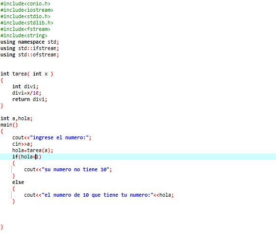

actvidad 1

Poco a poco avamzamos en funciones todos juntos en funciones por medio de conceptos basicos hemos visto los grandes avances que llevamos, me gustan las nuevas dinamicas de calificacion que implementa profe por que aunque yo sepa los temas y los sepa sustentar hay muchas personas que estan avanzando con vacios siento que este perido esta siendo mucho mas interactivo y las actividades no nos demandan mucho tiempo .